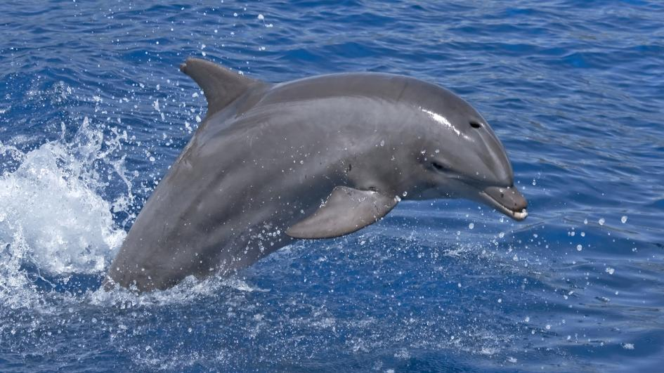
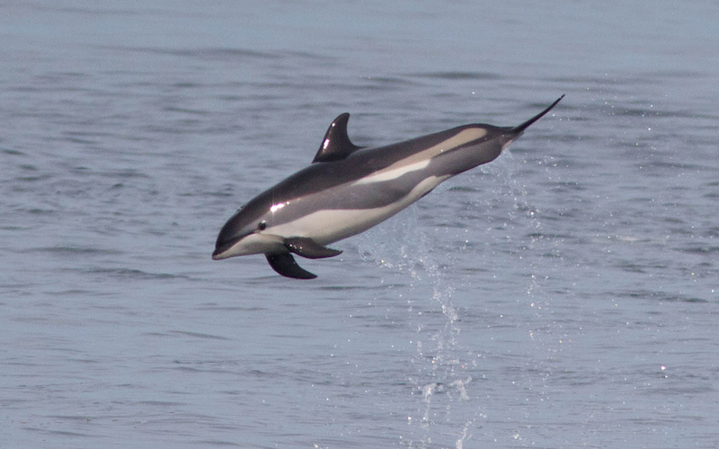

Evan's Dolphin Rescue
Evan's Dolphin Rescue Center
Info on the dolphin's rescue
Hello and thank you for coming to Evan's Dolphin Rescue Center. Today we have three dolphins that will need our help fast.
All three different species dolphins are injuryed and the descriptions of the dolphins is just below here.
- Common Bottlenose or scientific name Tursiops Truncatus
(This Common Bottlenose dolphin had been bitten by a shark and needs help from us.)

- Short-beaked Common or scientific name Delpinus Delphis
(The Short-Beacked has been cought in a fishing net of in the coast of the Atlantic Ocean.)

- Atlantic White-Sided Dolphin or scientific name Lagenorhynchus Acutus
(This Atlantic White-Sided was found on the beach starving and not in the ocean where he belongs to.)
